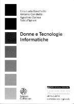
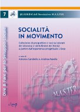
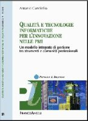
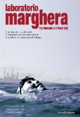

Formazione e Comunicazione
Relazioni e Seminari in ambito Scientifico e nella Divulgazione
- Relazione “OSIRIS Brief introduction – Understanding RIs – Open and sustainable ICT RIs strategy – Results up to present” at the Impact of e-Infrastructures: Assessment Methodologies Session during EGI Community Forum, Monaco, Germania, 29 Marzo 2012;
- “OSIRIS Presentation”, partecipazione e discussione in qualità di OSIRIS partner al Research Infrastructures Concertation Meeting, 22-23 Settembre 2011, Lyon;
- “KPI-Supported PDCA Model for Innovation Policy Management in Local Government”, relazione alla Conferenza Internazionale EGOV2011, 29 Agosto – 2 Settembre 2011, Delft (Olanda);
- “Strumenti Open Source per l’eGovernment”, relazione scientifica presso il Dipartimento di Scienze Ambientali, Informatica e Statistica, ciclo di conferenze “OS piattaforma di sviluppo per Applicazioni Onlus e non solo”, 20 Aprile 2011;
- “ICT Research Infrastructures: Interviews”, co-conduzione degli OSIRIS European Interviews Meetings: 25 Agosto 2011, Leuven, Belgio (IMEC); 19 Settembre 2011, Lyon, Francia (EGI); 29 Settembre 2011, Amsterdam, Olanda (LIFEWATCH), 6 Ottobre 2011, Cambridge, UK (Dante/Géant), 30 Novembre 2011, Grenoble, Francia (Minatec-CEA/LETI);
- “OSIRIS European Project Meetings”: co-conduzione in qualità di OSIRIS WP3 “Benchmarking” Leader: 26-27 Aprile 2010, The Hague (NL), 30 Settembre 2010, Bruxelles (BE); 10/11 Febbraio 2011, Praga (CZ); 7/8 Aprile 2011, Leuven (BE); 27/28 Aprile 2011, Brugge (BE), 27 Maggio 2011, Bruxelles (BE), 17 Ottobre 2011, Bruxelles (BE), 13/14 Dicembre 2011, Bruxelles (BE), 20/21 Febbraio 2012, Bruxelles (BE), 3/4 Aprile 2012, Padova (IT), 18/19 Aprile 2012, Bruxelles (BE), 31 Maggior/1/Giugno 2012, Bruxelles (IT);
- ”Tecnologie Informatiche per la PA. eGovernment Intelligence”, relazione scientifica alla Conferenza Provinciale Permanente. Seminario per la presentazione progetti di Innovazione e qualità dei Servizi, Prefettura di Belluno, 18/11/2010;
- “PA & OpenSource. Progetti di Ricerca”, relazione al convegno PA & Open Source: un percorso tra opportunità ed innovazione, Parco Scientifico VEGA, Marghera, Venezia, 11/11/2010;
- ”eGovernment Intelligence”, relazione alla Conferenza Provinciale Permanente. Prefettura di Belluno, 15/10/2010;
- “Scenari – Green Economy”, relazione al convegno “Diritto ed Economia Verde – Globalizzazione e prospettive territoriali: incontro con gli stakeholders per approfondire e capire”, Rovigo, 15/7/2010, Villa Molin Avezzù Pignatelli;
- “LHC e la Big Science come modello: Mega-Reti ed Infrastrutture Scientifiche
Pan-Europee: le costituende fondamenta per la società e l’economia dei prossimi anni”, relazione scientifica di apertura dell’VIII Salone d'Impresa, 25/06/2010, Mestre-Venezia;
- “Marghera 2009 dopo l’industrializzazione”, presentazione del libro (come coautore), Biblioteca di Marghera, 9/10/2009;
- “Weak Identities for Deliberative e-Democracy”, relazione scientifica, Electronic Participation: Proceedings of Ongoing Research, General Development Issues and Projects of ePart 2009, 1st International Conference, ePart 2009, Linz, Austria, September 1-3, 2009;
- “New industry perspectives emerging from the EGI model”, relazione scientifica al EGEE User Forum + OGF25 + OGF.EU2, Centro “Le Ciminiere”, Catania, March 5th 2009;
- “Fisica 2”, insegnamento ed esercitazioni per la Laurea di primo livello in Matematica, A.A. 2008-2009, per complessivi 3,00 crediti, Facoltà di Scienze, Università di Padova;
- “Ambiente e Salute a Venezia, Mestre e Marghera”, relazione in III Commissione Consiliare, Ca’ Farsetti, Venezia, mercoledì 20 maggio 2009;
- “Ambiente e Salute a Venezia, Mestre e Marghera”, lezione tenuta in Aula Magna dell’ITIS Zuccante, in qualità di Esperto per conto dell’Ufficio Programmazione Sanitaria del Comune di Venezia, lunedì 6 aprile 2009;
- “Ambiente e Salute a Venezia, Mestre e Marghera”, lezione tenuta in Aula Magna dell’Istituto Stefanini, in qualità di Esperto per conto dell’Ufficio Programmazione Sanitaria del Comune di Venezia, lunedì 23 aprile 2009;
- “Environment and Health: Recent Developments in Europe”, lezione tenuta nell’ambito dell’Advanced, Training Program on Environmental Management and Sustainable Development, “Air Quality Control” – MEP 1, Venice International University, S. Servolo, Venezia, 17 febbraio 2009;
- “Environment and Health: Recent Developments in Europe”, lezione tenuta nell’ambito dell’Advanced Training Program “Air Quality and Health” Ambiente/SICP - BMEPB 3, Venice International University, S. Servolo, Venezia, 21 novembre 2008;
- “La mappa dell’inquinamento veneziano”, relazione al Forum Cittadini: Quale Salute a Venezia?, Ca’ Farsetti, Venezia, giovedì 20 novembre 2008;
- “eGovernment 2.0”, presentazione al Lunch Seminar del Dipartimento di Informatica, Università “Ca’ Foscari” di Venezia, 25 giugno 2008;
- “Marghera: un modello di sviluppo in discussione, un laboratorio per sperimentare nuovi percorsi”, attività di docenza prestata nell’ambito del Master interateneo 2008 "Regolazione dello sviluppo locale", 6 giugno 2008, Università di Padova;
- “Dal web 1.0 al web 3.0 passando per il web 2.0 … I progetti di ricerca nell’ambito del laboratorio”, relazione e discussione al Kick-Off meeting per il progetto Unive/Regione Veneto “Laboratorio per la gestione e lo sviluppo dei portali per il territorio”, Dipartimento di Informatica, Università “Ca’ Foscari” di Venezia, venerdì 29 febbraio 2008;
- “Marghera: Evoluzione o Involuzione? un modello di sviluppo in discussione, un laboratorio per ridisegnare il futuro”, lezione al Liceo Scientifico Statale “U. Morin”, Mestre (Ve), lunedì 25 febbraio 2008;
- “Dal World Wide Web alla Great Global Grid: risorse di calcolo più economiche, sicure e scalabili con le computing grid condivise”, relazione e discussione a: “Grid Computing, soluzioni innovative per le piccole e medie imprese”, BEinGRID/Sogea, Fornace di Asolo (Tv), venerdì 22 febbraio 2008;
- “Il Sistema TEcnologico Partecipato (S.TE.P.) per l’informazione, la collaborazione e la comunicazione dei giovani della Riviera del Brenta e del Miranese”, presentazione di avvio del progetto agli assessori di competenza, Sala Consiliare, Comune di Camponogara (Ve), giovedì 7 febbraio 2008;
- “EGI Industry Take Up”, relazione al “European Grid Initiative WP3 Meeting”, Cern/Ginevra (Svizzera), giovedì 31 gennaio 2008;
- Relazione scientifica di apertura Il Caos: transizione alla casualità di un sistema deterministico, ad introduzione del IV Salone d’Impresa “Il Caos: nuova regola di mercato”, Villa Foscarini Rossi, Stra (Venezia), 31 marzo / 1 aprile 2006; slides indice: 1 2 3 4;
- L'Universo in Scatola: Breve Storia dell'Universo (A.C.) e Caleidoscopi Cosmici (Gianpietro Favaro), presentazione per il Circolo Astrofili di Mestre, giovedì 30 Marzo 2006;
- Biostrutture, cristalli, nanostrutture e simmetrie della natura, presentazione per il Circolo Astrofili di Mestre, venerdì 27 Gennaio 2006;
- Componente della commissione scientifica dell’Università di Padova attiva a supporto della giuria istituzionale per la I edizione del Premio Nazionale per la Responsabilità Sociale delle Imprese (con il patrocinio di Ministero del Lavoro e della Regione Veneto ed in collaborazione con la Camera di Commercio di Rovigo), Città di Rovigo, 13 Dicembre 2005.
- "Vita, nascita e morte delle stelle", per il Circolo Astrofili di Mestre, venerdì 26 Novembre 2005;
- "Ai Confini dell’Universo", presentazione per il Circolo Astrofili di Mestre, Sabato 29 Marzo 2005;
- "L’Universo in un Guscio di Noce": una libera rilettura del libro “Universe in a nutshell” di Hawking, per il Circolo Astrofili di Mestre, sabato 13 Gennaio 2004;
- Partecipazione alla discussione “Real world software maintenance Reengineering experiences”, 6th Reengineering Forum, Palazzo degli Affari, Firenze, 8-11 Marzo 1998;
- "Binary-Oscillatory Networks: Bridging a Gap between Experimental and Abstract Modeling of Neural Networks", relazione al Journal Club, Scuola Internazionale Superiore di Studi Avanzati (SISSA) - Settore di Biofisica, Trieste, 18 Giugno 1996.
- Corso semestrale per studenti di PhD “C++ Programming Course in the Windows/Visual C++ Environment”, docenza presso la Scuola Internazionale Superiore di Studi Avanzati (SISSA) - Settore di Biofisica, Trieste, marzo – luglio 1996;
- "WBase: a C package to reduce tensor products of Lie algebra representations. Description and new developments", presentazione scientifica al Fourth International Workshop on Software Engineering and Artificial Intelligence for High Energy and Nuclear Physics (serie convegni AIHEP), Palazzo Congressi, Pisa, 3-8 Aprile 1995;
- "Viaggi nel tempo", presentazione al Journal Club del Dipartimento di Fisica dell’Università di Padova, 7 Aprile 1993;
- “Dualità e Supersimmetria in 10 dimensioni”, relazione al Congresso Nazionale di Fisica Teorica “Cortona '93”, Cortona, 9-12 Giugno 1993.
Relazioni a Convegni e Docenze per la Gestione d'Impresa
- Roadshow di presentazione del testo “Socialità in movimento: collezione di prospettive e voci dal territorio del Miranese e della Riviera del Brenta a partire dall’esperienza progettuale J-Step”: 24 Maggio 2012, Camponogara, 25 Maggio 2012, Mestre, 7 giugno 2012, Noale, 15 giugno 2012, Padova;
- “UFC #11 – Metodologia di sviluppo ed elementi di UML”, sessioni formative (32 ore) nell’ambito del corso FSE “Java and Mobile Developer”, Marghera, maggio – luglio 2011;
- “Cloud Computing, l’internet integrata del calcolo”, relazione al convegno Cloud Computing: la nuvola dell’informatica del nuovo millennio, Padova, 10 novembre 2010;
- “Sviluppo, collaudo, installazione e configurazione del software”, corso UFC di 50 ore nell’ambito del percorso IFTS con certificazione di IV livello europeo per “Tecnico superiore per lo sviluppo del software finalizzato alla valorizzazione e promozione turistica, culturale ed ambientale del territorio”, itis C. Zuccante, Mestre, ottobre-novembre 2010;
- “Web 2.0 per il Distretto SportSystem”, seminario per gli associate del distretto, Museo dello Scarpone, Montebelluna (Tv), 2/11/2009;
- “Dal web 2.0 al web 3.0. Sistemi collaborativi, web semantico, ontologie…”, presentazione al Salone d’Impresa, Stra (Venezia), 5 maggio 2008;
- “Grid Computing”, relazione e discussione, venerdì 25 gennaio 2008, presentazione al Cenacolo per IT Manager, Salone d’Impresa, Sheraton Hotel, Padova;
- “Budget di commessa e tipologia di prodotto/servizio”, 11, 12, 13, 18, 20 dicembre 2007, sessioni formative per Kantea, c/o Logo Srl, Borgoricco (Pd);
- “La qualità e i sistemi informativi nell’evoluzione delle imprese”, relazione e discussione, in “Le imprese che imparano nel caos del mercato”, Apindustria Padova, sabato 17 novembre 2007, Hotel Villa Giulietta, Fiesso d’Artico (Ve);
- “Project Management e strumenti IT”, 18, 25/9, 9, 16, 23/10 2007, sessioni formative per Kantea, c/o Logo Srl, Borgoricco (Pd);
- “Marketing per le Energie Rinnovabili”, 6, 7, 10, 12 settembre 2007, sessioni formative per Cesar, c/o Borsato Impianti Srl, Schio (Vi);
- “Marghera tra comunità urbana e sito industriale: un laboratorio di innovazione democratica”, relazione e successiva tavola rotonda, alla Summer School “Per un progetto di sviluppo glocale, scenari evolutivi sostenibili”, associazione M.A.S.TER, nell’ambito del Master in regolazione politica dello sviluppo locale, Università di Padova, 13 settembre 2007, Torreglia (Pd);
- “Caso Studio: Porto Marghera”, lezione al Master in “Regolazione politica dello sviluppo locale”, venerdì 25 maggio, Scienze Politiche, Università di Padova;
- “Pianificazione e gestione della produzione: la commessa e i suoi elementi costitutivi, il prodotto, il servizio, il processo”, 3 aprile e 18 maggio 2007, due giornate di formazione nell’ambito del corso FSE 002, Kantea, c/o Centro di Formazione Professionale “Pia Società San Gaetano”, Vicenza;
- Attività di “discussant” al Quinto Salone d’Impresa, “La tecnologia al potere? Come si cresce innovando efficacemente”, 29 marzo 2007, Villa Foscarini Rossi, Stra (Ve);
- “Un Sistema Informatico per la somministrazione multicanale di questionari nella PA: eGovernment Inquiry Framework”, relazione presentata al Workshop “Citizens iTV: stato avanzamento delle attività e sviluppi futuri”, 15 dicembre 2006, San Servolo c/o Venice University – Regione Veneto;
- “Laboratorio Marghera”, testimonianza sull’esperienza sociale di Marghera sui temi ambientali, in “Decrescita per il Veneto, un’idea per creare una nuova convivenza e tutelare beni comuni e democrazia“, 18 dicembre 2006, Mestre, Auditorium Provincia di Venezia;
- “Il Caos? E’ la nuova regola di mercato!”, partecipazione alla tavola rotonda nel “Cenacolo per Imprenditori”, Salone d’Impresa, Ristorante all’Amelia, Venerdì 9 febbraio 2007;
- Ciclo di eventi di presentazione di “Laboratorio Marghera tra Venezia e il Nord Est”: Mestre, Centro Santa Maria Le Grazie, 15 dicembre 2006; Venezia, Libreria Mondadori, 3 marzo 2007, Televenezia, 10 maggio 2007; Padova, Scienze Politiche, 25 maggio 2007;
- Ciclo di eventi di presentazione “Strumenti di gestione e tecnologie informatiche per l’Impresa” a seguito del libro “Qualità e tecnologie informatiche per l’innovazione nelle PMI”: Padova, Dipartimento di Scienze Economiche “M. Fanno”, 18 Ottobre 2006; Roma, Camera di Commercio, 16 novembre 2006, Venezia-Mestre, Dipartimento di Scienze Informatiche, 20 dicembre 2006; Vicenza, Associazione Artigiani, martedì 16 gennaio 2006; Venezia – Mestre, Alea / Unindustria Venezia, 10 Marzo 2007; Treviso, Club Bit / Unindustria Treviso, giovedì 22 Marzo 2007; Consorzio Università Rovigo, venerdì 1 Giugno 2007;
- “IT e Processi: Strumenti di Innovazione per le PMI Da una collezione di apparati ad un sistema integrato per la crescita delle imprese”, relazione al “Cenacolo IT”, Salone d’Impresa, venerdì 24 novembre 2006, Sheraton Padova Hotel & Conference Center;
- “Il ciclo di sviluppo del nuovo prodotto”, sette giornate di formazione nell’ambito del corso FSE 020 “Addetto al processo di sviluppo nuovo prodotto nella filiera del freddo” organizzato dall’Associazione del Freddo e del Condizionamento Aria (AFCA) / Forema, – Padova, 3, 6, 9, 11, 19, 24/25, 26 Ottobre 2006;
- "Innovazione tecnologica e percorsi di condivisione comune nelle scelte energetiche”, relazione scientifica all’incontro con i Sindaci delle Comunità Montane promosso da ACSM Spa, Fiera di Primiero, 10 ottobre 2006;
- Relazione scientifica di apertura “Il Caos: transizione alla casualità di un sistema deterministico”, ad introduzione del IV Salone d’Impresa “Il Caos: nuova regola di mercato”, Villa Foscarini Rossi, Stra (Venezia), 31 marzo / 1 aprile 2006;
- Componente della commissione scientifica dell’Università di Padova attiva a supporto della giuria istituzionale per la I edizione del “Premio Nazionale per la Responsabilità Sociale delle Imprese” (13 Dicembre 2005, Città di Rovigo, con il patrocinio di Ministero del Lavoro e della Regione Veneto ed in collaborazione con la Camera di Commercio di Rovigo);
- “Sistemi Integrati Ambiente - Sicurezza”, tre giornate di formazione nell’ambito del corso FSE 039 “Ecomanager” organizzato da Pro.Forma srl – Marghera, 9, 10 e 15 giugno 2005;
- “Le norme Iso 9000:2000; Gestione Sistema Qualità”, due mezze giornate di formazione per l’Università di Padova, Facoltà di Scienze Politiche nell’ambito del modulo “Sistema Azienda” del corso FSE “Gestione, amministrazione ed internazionalizzazione delle imprese” – Sede di Rovigo, 9 marzo 2005 e 16 marzo 2005;
- “Sistemi di gestione per la qualità”, giornata di formazione nell’ambito del corso FSE 016 “Sistemi digitali per architettura ed arredamento” organizzato da Forema – Unindustria Padova, Padova, 9 novembre 2004;
- “Sistemi di gestione per la qualità”, giornata di formazione nell’ambito del corso FSE 003 “Manager per la logistica d’impresa” organizzato da Forema – Unindustria Padova, Padova, 27 ottobre 2004;
- “Certificazione Vision 2000”, relazione interna al II Sales Meeting 2004, Eurocongressi Hotel, Cavajon Veronese (VR), 23 luglio 2004;
- “Il Bilancio delle Competenze”, giornata di formazione nell’ambito del corso FSE “Sistemista di rete Windows 2000 e Linux” organizzato da ISFID, Marghera (VE), 21 luglio 2004;
- “Il Quality Manager nelle imprese di informatica”, lezione/testimonianza agli studenti del corso di laurea in informatica nell’ambito dei “seminari professionalizzanti 2004” promossi dal dipartimento di informatica, 25 maggio 2004;
- “La misura nel software”, relazione presentata al convegno “Iso/Iec 90003, guida per l’applicazione dei Sistemi di Gestione Qualità alle aziende di software” organizzato dall’Associazione Italiana Cultura Qualità, Holiday Inn, Marghera(Ve), 6 novembre 2003;
- Rapporto di Valutazione Esterna del Comitato di Indirizzo, Dipartimento di Informatica - Corso di Laurea in Informatica, Facoltà di Scienze MM.FF.NN., Università di Cà Foscari, all’interno del II Rapporto di Autovalutazione del Corso di Laurea in Informatica – Progetto CampusOne – incontri: 9 maggio 2003, 19 novembre 2003, 17 giugno 2004;
- “Modulo Qualità”, due giornate di formazione, Mestre (Ve), 17 novembre 2003 e 26 novembre 2003, per il Centro Ricerche Trasporti Analisi e Mobilità - CERTAM nell’ambito del corso FSE “Operatore per aziende di logistica intermodale”;
- “Qualità nei processi e-business”, giornata di formazione, 24 ottobre 2003, Centro Universitario di Organizzazione Aziendale – CUOA, nell’ambito del corso FSE “Analista di processi e-Business”;
- “Tecniche di analisi dei processi: esempi nelle aree vendita ed acquisti”, seminario formativo tenuto presso Treviso Tecnologie, 21 ottobre 2003.
Torna su
Pubblicazioni
Articoli Scientifici e Professionali
in Informatica, Qualità/Ambiente e Fisica Fondamentale
- “Model for Public Authority — Research Infrastructure Interaction”, A. Hoogerwerf (a cura di), Rosette Vandenbroucke, Piet Demeester, Colin Wright, A.C., Luc De Ridder, Musa Cağlar, Alan Mathewson (contributori), deliverable D4.1 al 31/3/2012 del Progetto Europeo FP7-ICT-248295 Towards an Open and Sustainable ICT Research Infrastructure Strategy (OSIRIS);
- “Mapping of existing PA-RI Cooperations”, A.C., deliverable D3.4 al 31/05/2012 del Progetto Europeo FP7-ICT-248295 Towards an Open and Sustainable ICT Research Infrastructure Strategy (OSIRIS);
- “Inventory of existing PA-RIs cooperation – Update”, A.C. e Mirco Mazzucato, deliverable D3.2 al 30/11/2011 del Progetto Europeo FP7-ICT-248295 Towards an Open and Sustainable ICT Research Infrastructure Strategy (OSIRIS), http://www.osiris-online.eu/documents.html;
- “KPIs from Web Agents for Policies' Impact Analysis and Products' Brand Assessment”, A.C. e A. Cortesi, Proceedings CISIM 2011: Computer Information Systems: Analysis and Technologies, in CCIS vol. 245, pp. 192-201, Springer-Verlag, Heidelberg, 2011;
- “KPI-Supported PDCA Model for Innovation Policy Management in Local Government”, A.C. e A. Cortesi, EGOV2011, Lecture Notes in Computer Science 6846, pagg. 320-331, Springer, Heidelberg, 2011;
- “Quality and Impact Monitoring for Local eGovernment Services”, A.C. , A. Albarelli e A. Cortesi, Journal Transforming Government: People, Process and Policy, vol.6(1), p. 112-125, Emerald Ed. (ISSN: 1750-6166), doi: 10.1108/175061612112148592 012;
- “LHC e la Big Science come modello. Mega-Reti ed Infrastrutture Scientifiche Pan-Europee: le costituende fondamenta per la società e l’economia dei prossimi anni”, contributo in via di pubblicazione su F. Azzariti (a cura di) Report 2011 del Salone d’Impresa;
- “Inventory of existing PA-RIs cooperation”, A.C. e Mirco Mazzucato, deliverable D3.1 al 31/12/2010 del Progetto Europeo FP7-ICT-248295 Towards an Open and Sustainable ICT Research Infrastructure Strategy (OSIRIS);
- “Clima, Energia & Green Economy: dall’emergenza ambientale ad una leva per lo sviluppo ed occasione per nuovi business delle PMI italiane”, articolo in Veneto, Economia & Società, rivista dell’associazione CGIA di Mestre, Ottobre 2010;
- “Green Computing”, A.C. e Michele Michelotto, articoloin ICT Security, N.81, Aprile 2010, pagg.46-51;
- “La QoS a tre livelli per i Servizi Web di eGovernment”, A.C. , A. Albarelli e A. Cortesi, capitolo in: AA.VV., “Processi condivisi e sistemi aperti per un egovernment partecipato – L’esperienza della Regione Veneto nella promozione della società dell’informazione e della conoscenza tra enti locali, imprese, cittadini e territorio”, Università “Ca’ Foscari”, Venezia, 2010;
- “Three-layered QoS for eGovernment Web Services”, A.C. , A. Albarelli e A. Cortesi, in: P. Agouris, C. Baru, R. Sandoval, proceedings of the 11th International Conference in Digital Government Research DGO 2010, ACM digital library, May 17-20, 2010, Puebla, Mexico (“Second Best Paper Award” della conferenza);
- “Report on key challenges based on previous studies”, Bruno Martuzāns, Baiba Kaškina, Katrīna Sataki, A.C., Helmut Sverenyák, Arno Hoogerwerf, Jan Hrušák, Jarmila Tiosavljevičová, Musa Çağlar, Colin Wright, , 1/4/2010, deliverabile D2.1 del Progetto FP7 IST 248295 Towards an Open and Sustainable ICT Research Infrastructure Strategy (OSIRIS);
- “Business Process Management. Tecniche di Bpm/Workflow a supporto dei processi in un modello di IT "flessibile" per la Pubblica Amministrazione Locale”, A.C., S. Vianello, A. Cortesi, A. Mola, E. Tasso, B. Salomoni, articolo su “Qualità”, numero speciale “Informatica e Qualità. La Società dell’Informazione”, pagg.11-17, Settembre/Ottobre 2010;
- “Inquinamento e danni alla salute. Un cambiamento è urgente nel nostro modello di vita”, A.C., contributo in: Benatelli, N. (a cura di), Quaderno della Consulta per la Tutela della Salute N.5/2009, “Assistenza primaria, welfare di comunità, centralità della persona. Prospettive di sviluppo dei servizi socio sanitari a Venezia”, Comune di Venezia, 2009;
- “Un approccio per processi per un eGovernment di qualità – Le sperimentazioni del Laboratorio Veneto per l’eGovernment finalizzate per accrescere la qualità dei servizi al cittadino”, A.C., A. Albarelli, A. Cortesi, A. Mola, E. Tasso, B. Salomoni, articolo sullo speciale Qualità del periodico di Confindustria Trentino, Ottobre 2009;
- “Qualità nell’eGovernment Locale – Gli sviluppi sul tema della qualità dei servizi pubblici al cittadino del Laboratorio di eGovernment Veneto”, A.C., A. Albarelli, A. Cortesi, A. Mola, E. Tasso, B. Salomoni, articolo su “Qualità”, Settembre 2009;
- “Weak Identities for Deliberative e-Democracy”, A.C., A. Albarelli, A. Cortesi, in: Tambouris, E., Macintosh A. (Eds.). Electronic Participation: Proceedings of Ongoing Research, General Development Issues and Projects of ePart 2009, 1st International Conference, ePart 2009, Linz, Austria, September 1-3, 2009 Trauner Druck: Linz, Schriftenreihe Informatik # 31, 2009;
- “Advanced Quality Tools for eGovernment Services”, A.C., A. Albarelli, A. Cortesi, in: Marco Winckler, Monique Noirhomme-Fraiture, Dominique Scapin, Gaelle Calvary and Audrey Serna (Eds.). Proceedings of the 2nd International Workshop on Design and Evaluation of e-Government Applications and Services (DEGAS'2009) in conjunction with INTERACT'2009, Uppsala, Sweden, August 24th 2009;
- “Final EGI Function Definition”, deliverabile D3.2 del Progetto European FP7 IST 211693 Grid Initiative Design Study (EGI_DS), (Chapter 8 "Management"), 5/5/2009;
- “A business model for the establishment of the, European Grid Infrastructure”, A.C., D. Cresti, T. Ferrari, F. Karagiannis, D. Kranzlmueller, P. Louridas , M. Mazzucato, L. Matyska, L. Perini, K. Schauerhammer, K. Ullmann, M. Wilson, in the Proceedings of the Proc. of the 17th Int. Conference on Computing in High Energy and Nuclear Physics (CHEP 2009), Mar , Prague, CZ, Int. Journal of Physics Conference Series 219 062011, 2010;
- “European Grid Initiative (EGI) Blueprint”, deliverabile D5.3 del progetto europeo FP7 IST 211693 Grid Initiative Design Study (EGI_DS) (contributo alla stesura), 22/12/2008;
- “An Ontology-based Inquiry Tool”, A.C., A. Albarelli, A. Cortesi, In Proceedings of the 5th Workshop on Semantic Web Applications and Perspectives (SWAP2008), Rome, Italy, December 15-17, 2008, CEUR Workshop Proceedings, ISSN 1613-0073;
- “La rinascita possibile di una Marghera impossibile. L’industria chimica, la pesante eredità ambientale, l’impegno della comunità cittadina, il quadro attuale e … quale futuro?”, contributo in S. Barizza (a cura di), “Marghera 2009 dopo l’industrializzazione”, Auser, 2009;
- “Dal ciclo del cloro allo smog. Come proteggere la salute – la mappa dell’inquinamento veneziano”, A.C., capitolo in Benatelli, N. (a cura di), Quaderno della Consulta per la Tutela della Salute N.2/2008, “Prevenzione e tutela della salute pubblica. Raccomandazioni ed interventi globali contro le malattie degenerative”, Comune di Venezia, 2008;
- “EGI Functions: First Definition”, deliverabile D3.1 del Progetto European FP7 IST 211693 Grid Initiative Design Study (EGI_DS), contributo alla stesura, 12/9/2008;
- “Nuovi modelli dell’ICT – Web 2.0 e oltre. Web 2.0, web semantico, grid computing, virtualizzazione … un’opportunità per le imprese strutturate”, A.C., articolo in “Qualità”, Settembre 2008;
- “Il grid computing parla italiano”, A.C., sul blog “Firstdraft”, marzo 2008;
- “Le tecnologie ICT: strumento e complemento dei sistemi di gestione aziendali”, A.C. ed Alberto Bobbo, articolo in “Qualità”, marzo/aprile 2008;
- “La definizione di un framework di gestione multicanale per la rilevazione della soddisfazione degli utenti”, A.C. e Francesco Brocchi, resoconto di un progetto di ricerca, capitolo in “Citizens iTV: un modello regionale di servizi ai cittadini attraverso la televisione digitale terrestre”, Franco Angeli, Milano, 2007;
- “Le “tante dualità” d’intervento di scienza e tecnologia e nel sostegno ai processi d’innovazione”, capitolo in Azzariti, F. (a cura di), "La tecnologia al potere", Feltrinelli, Milano, 2007;
- “La rinascita della comunità cittadina di Marghera. Il percorso di impegno civile innescato dall’emergenza chimica”, contributo in Barizza S. e Cesco L. (a cura di) “Marghera 1917-2007. Voci, suoni e luci tra case e fabbriche”, Comunicare & Stampa, Marghera, 2007;
- “Il Caos”, A.C., capitolo di apertura (pagg.21-40), in Azzariti, F. (a cura di), “Il Caos: nuova regola di mercato”, FrancoAngeli, Milano, 2006;
- "I dati per l’impresa: una bussola per indirizzare il miglioramento, articolo pubblicato su Qualità (speciale: “Economia e Qualità”), anno XXXVI, Novembre/Dicembre 2005, pagg. 30-36, Aicq, Milano;
- "I flussi informativi come strumento primario di supporto alla gestione dell'impresa", articolo pubblicato su Sistemi & Impresa, Novembre 2005, pagg. 27-33, Este, Milano;
- "Vision 2000 ed informatica: un sistema sinergico di supporto alle imprese orientate ai processi", articolo pubblicato su Sistemi & Impresa N.8, Ottobre 2004, pagg. 87-92, Este, Milano;
- Le tecnologie informatiche come strumenti abilitanti per il sistema di gestione della qualità - Portali, workflow, moduli elettronici, software specializzati;
ecco come l’informatica può semplificare il soddisfacimento dei requisiti Iso 9001:2000, su Qualità, anno XXXIV n.6, Agosto/Settembre 2004, pagg. 14-22;
Leggi l'articolo
- Grid Computing – L’informatica come public utility del calcolo:
oltre il web, verso un moderno modello economico di servizio, su Sistemi e Impresa N.4, Maggio 2004, pagg. 118-122;
Leggi l'articolo
- Qualità nel software – Standard nell’informatica e metriche nel software: una panoramica, su Sistemi e Impresa N.1, Gennaio/Febbraio 2004, pagg. 87-90;
Leggi l'articolo
- WBase: a C package to reduce tensor products of Lie algebra representations.
Description and new developments, A. C., pubblicato nei Proceedings of the Fourth International
Workshop on Software Engineering, Artificial Intelligence and Expert Systems for High Energy and
Nuclear Physics, “New Computing Techniques in Physics Research IV”, ed. B. Denby and D. Perret-Gallix, 1995 World Scientific;
- Anomalie e Supergravità Effettiva nella Stringa Eterotica di Green-Schwarz, A.C., Tesi di Dottorato, Università degli Studi di Firenze, Biblioteca Nazionale Universitaria, Marzo 1994;
- k-anomalies and space-time supersymmetry in the Green-Schwarz heterotic superstring, A.C., K. Lechner e M. Tonin, articolo su Nucl. Phys. B438 (1995) 67-108;
Leggi l'articolo
- The Supersymmetric Version of the Green-Schwarz Anomaly Cancellation Mechanism, A.C. e K. Lechner, articolo su Phys. Lett. B332 (1994) 71-76;
Leggi l'articolo
- WBase: a C package to reduce tensor products of Lie algebra representations, A.C., articolo su Comput. Phys. Comm. 81 (1994) 248-260;
Leggi l'articolo
- Duality in Supergravity Theories, A.C. e K. Lechner, articolo su Nucl. Phys. B412 (1994) 479-501;
Leggi l'articolo
- Modelli di Superparticella e di Superstringa e loro Quantizzazione Covariante, A.C., Tesi di Laurea, luglio 1991.
Torna su
Libri

Donne e Tecnologie Informatiche
Un approfondimento quantitativo e qualitativo del gender gap esistente nelle ICT attraverso dati statistici, analisi del web, rapporti ufficiali, norme e politiche, con particolare attenzione alla realtà del Veneto
di Emanuela Boschetto, Antonio Candiello, Agostino Cortesi e Fabio Fignani
Scarica il pdf: Ca' Foscari Editore, Venezia, 2012

Socialità in Movimento
Collezione di prospettive e voci sui giovani del Miranese e della Riviera del Brenta a partire dall´esperienza progettuale J-Step
di Antonio Candiello ed Andrea Marella
Acquista: Cleup Editore, Padova, 2011

Qualità e tecnologie informatiche per l’innovazione nelle PMI
Un modello integrato di gestione tra strumenti e comunità professionali
di Antonio Candiello
Acquista: Franco Angeli Editore, Milano, 2006

Laboratorio Marghera tra Venezia ed il Nord Est
La giurisprudenza ambientale, la partecipazione attiva dei cittadini, bonifiche e prospettive di sviluppo
di Nicoletta Benatelli, Anthony Candiello, Gianni Favarato
Acquista: Nuova Dimensione Editore, Venezia, 2006
Torna su
Contatti
Antonio Candiello
Email: info[at]anthonycandiello.it
Gmail: candiello[at]gmail.com
Skype: jenx64
Facebook: Anthony Candiello su fb
Linkedin: Anthony Candiello su ld
Twitter: Anthony Candiello su tw
Torna su